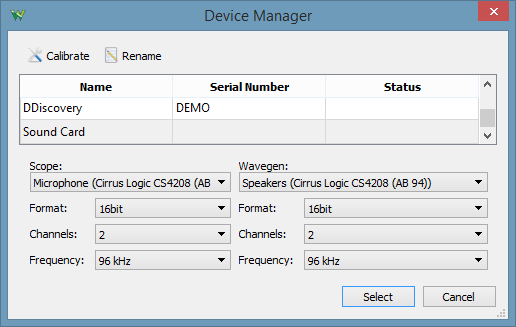
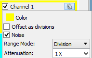
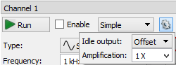

The WaveForms application can use the computer's sound card in order to test out the Scope (microphone or line-in) and Wavegen (speaker or line-out) functionality before purchasing an Instrumentation device. The instruments functionality will be limited but will provide a demonstration with non-simulated data.

The application Device Manager lets you select an input device for Scope and an output device to be used as Wavegen. Also lets you select the sample Format, number of Channels, and sampling Frequency.
The full scale of inputs and outputs is considered +/-1V. This can be adjusted using the Attenuation option for Scope Channels and Amplification option for Wavegen Channels.
 
A comparison of WaveForms compatible Instrumentation devices, can be found here.